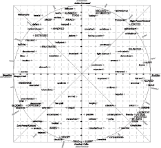
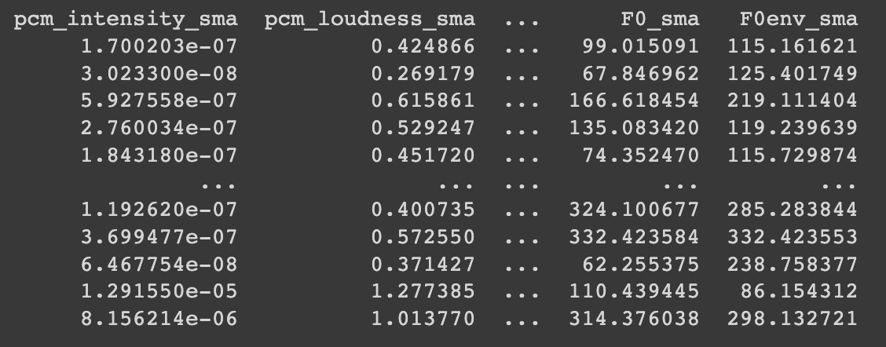

AI research intern
He worked as a project intern with NUS CS dept. and Signapore AI deputy director Prof. Stefan Winkler in Vision and interaction group on the topic of multi-modal emotion detection.

-
Project Topic: Working with Audio modality and research about multi-modality possibility of audio and facial expressions for emotion detection
-
Project sector: Interactive AI
-
Programming Language: Python
-
Project description: He was reponsible for performing a comprehensive literature review of feature and output level fusion models, reviewed the complex neural network architectures including Resnet50, etc.; identified suitable datasets. He also explored different audio pre-processing, feature extraction libraries on an advanced level from audio signals using librosa, openSMILE. He along with his project colleague, trained the Mel-Frequency Cepstral Coefficients (MFCC) on a CRNN network, and 26 other low level descriptive audio features from openSMILE on various supervised regressors for higher CCC rate on valence arousal based dataset. Finally applied 3D Convolutional Neural Network and LSTM model to fuse features from the two modalities with classification model and got an accuracy of 55%.
